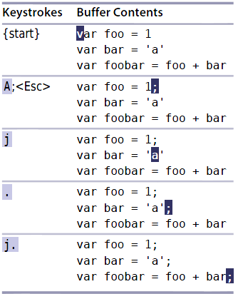

技巧2: 不要自我重复
$:光标移动到当前行的末尾I:在光标所在字符所在行的开头插入内容i:在光标所在字符的上一个字符位置插入内容a:在光标所在字符的下一个字符位置插入内容A:在光标所在字符所在行的结尾插入内容
例子:每行结尾插入;字符
$a;<Esc>:光标移动到改行末尾($),在末尾插入(a), 插入字符(;),退回到普通模式(<Esc>)j$a;<Esc>:光标移动到下一行(j),光标移动到改行末尾($),在末尾插入(a), 插入字符(;),退回到普通模式(<Esc>)j$a;<Esc>:光标移动到下一行(j),光标移动到改行末尾($),在末尾插入(a), 插入字符(;),退回到普通模式(<Esc>)- ...
减少无关操作
A替代了$a的功能，为了减少按键，应该使用A,上面的操作变成
A;<Esc>jA;<Esc>jA;<Esc>...
例子： 每行末尾加上;

| 上一篇 | 下一篇 |
|---|---|
Tip1 认识.命令 |
Tip3 以退为进 |